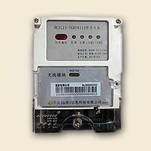

Ⅰ型采集器

Ⅰ型采集器是微功率无线抄表系统终端的数据采集设备，具有功能强大、速度快、成功率高、运行稳定、便于运维等特点，是多个智能电能表信息采集的必备产品。
特性
能够按集中器设置的采集周期自动采集电能表数据。
能够分类存储数据，形成总及各费率正向有功电能示值等历史日数据，保存重点用户电能表的最近24小时整点总有功电能数据。
能够记录参数变更、抄表失败、终端停/上电等事件。
有自测试、自诊断功能，发现终端的部件工作异常有记录。
技术参数
工作电压：220V ±30%
工作频率：50Hz，-6%～+2%
工作温度：-40℃～+70℃
整机功耗：在非通信状态下，采集器消耗的视在功率≤5VA、有功功率≤3W
抄表端口：1路RS485总线，可接入1～32 路电能表
工作湿度：≤95%
设计寿命：10年以上
返回